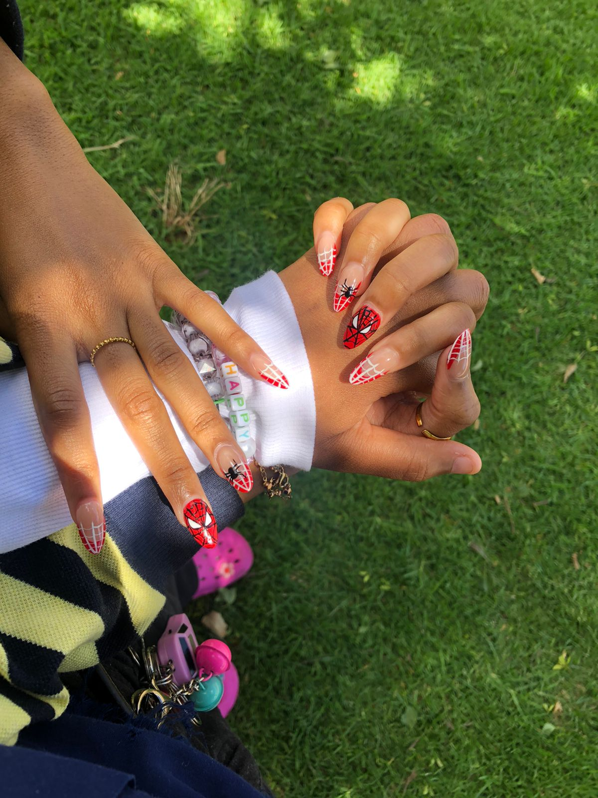

<!DOCTYPE html>
<html lang="en">
  <head>
    <meta charset="UTF-8" />
    <meta name="viewport" content="width=device-width, initial-scale=1.0" />
    <title>For The Love of My Life </title>
    <!-- External Dependencies -->
    <script src="https://cdn.tailwindcss.com"></script>
    <script src="https://unpkg.com/@babel/standalone/babel.min.js"></script>
    
    <!-- Load React and ReactDOM as Globals for maximum compatibility -->
    <script src="https://unpkg.com/react@18/umd/react.production.min.js"></script>
    <script src="https://unpkg.com/react-dom@18/umd/react-dom.production.min.js"></script>

    <link rel="preconnect" href="https://fonts.googleapis.com">
    <link rel="preconnect" href="https://fonts.gstatic.com" crossorigin>
    <link href="https://fonts.googleapis.com/css2?family=Dancing+Script:wght@400;700&family=Montserrat:wght@300;400;600;700&display=swap" rel="stylesheet">
    
    <style>
      .font-script { font-family: 'Dancing Script', cursive; }
      .font-sans { font-family: 'Montserrat', sans-serif; }
      html { scroll-behavior: smooth; }
      body { margin: 0; padding: 0; overflow-x: hidden; background: #000; }
      
      @keyframes float {
        0% { transform: translateY(0px) rotate(0deg); opacity: 0; }
        10% { opacity: 0.8; }
        90% { opacity: 0.8; }
        100% { transform: translateY(-100vh) rotate(360deg); opacity: 0; }
      }
      .heart-particle {
        position: absolute;
        color: rgba(255, 182, 193, 0.6);
        pointer-events: none;
        z-index: 15;
        animation: float 15s linear infinite;
      }
      .heart-clip {
        clip-path: url(#heart-clip);
      }
      .fade-enter-active {
        animation: fadeIn 1.2s ease-out forwards;
      }
      @keyframes fadeIn {
        from { opacity: 0; transform: translateY(10px); }
        to { opacity: 1; transform: translateY(0); }
      }
      .music-note {
        animation: noteFloat 3s ease-in-out infinite;
      }
      @keyframes noteFloat {
        0%, 100% { transform: translateY(0); }
        50% { transform: translateY(-5px); }
      }
      /* Custom selection color */
      ::selection {
        background: #ec4899;
        color: white;
      }
    </style>
  </head>
  <body>
    <div id="root"></div>

    <!-- Heart SVG Mask Definition -->
    <svg width="0" height="0" style="position: absolute;">
      <defs>
        <clipPath id="heart-clip" clipPathUnits="objectBoundingBox">
          <path d="M 0.5, 0.94 C 0.5, 0.94 0.01, 0.61 0.01, 0.35 C 0.01, 0.16 0.16, 0.01 0.35, 0.01 C 0.44, 0.01 0.5, 0.07 0.5, 0.07 C 0.5, 0.07 0.56, 0.01 0.65, 0.01 C 0.84, 0.01 0.99, 0.16 0.99, 0.35 C 0.99, 0.61 0.5, 0.94 0.5, 0.94 Z" />
        </clipPath>
      </defs>
    </svg>

    <!-- React Application Logic -->
    <script type="text/babel" data-presets="react,typescript">
      const { useState, useEffect, useRef, useMemo } = React;

      // --- Constants ---
      const MILESTONES = [
        {
          title: "My Favourite Picture of Us",
          description: "It’s the way we lean into each other, like the world outside the frame doesn’t even exist. It's my favourite because it’s the visual proof that home isn't a place—it's just wherever you are.",
          image: "pictures/pic2.jpeg"
        },
        {
          title: "Our First Ever Date at The Planetaurium",
          description: "I remember the weight of the universe above us, but in the dark, my world narrowed down to just the sound of your breathing , and the butterflies i felt when you held my hand in the dark. The stars were beautiful, but they were just background noise to the magic of finally having you close and realizing the girl of my dreams was real and i was sitting beside her , holding hands with her.",
          image: "pictures/pic3.jpeg"
        },
        {
          title: "You Photobombing My Pictures",
          description: "Your smile is the light I didn't know I was missing. These blurry, silly shots are my favorite because they capture the raw joy you’ve brought into my life ,a reminder that love is best when it's playful and free.",
          image: "pictures/pic7.jpeg"
        },
        {
          title: "The Day We Made Banana Bread From Scratch",
          description: "This was the day after our first big argument ,the air was still thick with the things we hadn't quite figured out how to say. But as we worked through baking that bread from scratch together, the tension softened into healing. It taught me that 'us' is something we nurture together; even when the ingredients feel messy, the result of the effort is always worth it.",
          image: "pictures/pic13.jpeg"
        },
        {
          title: "One of our fisrt ever pictures Together",
          description: "The Genesis of us-I'm glad we took these because it's where it all started. I look at our faces here and I see two people standing on the edge of a life-changing discovery. I didn’t know then just how deeply you would come to rewrite my heart, but looking back at that spark, I think my soul recognized yours before I even had the words to explain it.",
          image: "pictures/pic12.jpeg"
        },
        {
          title: "You Playing With My Lashes ",
          description: "There is a profound, quiet intimacy in the way you study the small details of my face. When you trace my lashes or put ligploss and lipliner on my lips, the world stops spinning. It’s a tender, wordless language that reminds me I am safe, I am seen, and I am entirely yours.",
          image: "pictures/pic14.jpeg"
          
        },
        {
          title: "Our Day at The Museum",
          description: "We wandered through halls filled with masterpieces, but my eyes never stayed on the frames for long because they were on you. I realized that day that you are the most intricate thing I have ever had the privilege of knowing , a living gallery of thoughts and dreams that I want to spend my whole life exploring.",
          image: "pictures/pic15.jpeg"
        },
        {
          title: "Our Day at the park",
          description: "I remember us going back and forth on those swings and how free i felt. This experience made me realise how much you heal my inner child without even trying. It reminded me that as long as I’m walking through this life with you, even a quiet afternoon in the park is an extraordinary adventure.",
          image: "pictures/pic18.jpeg"
          
        },
        {
          title: "Undoing Your Hair But i Kept Getting Distracted Bc You're Soo Beautiful",
          description: "I was supposed to be helping, but it’s hard to be a good assistant when the person in front of you is a literal work of art. I kept losing my place because I was mesmerized by the vulnerability of the moment—the softness of your neck, the trust in your eyes and the way your smile formed. It’s how you didn't want me to record this bc you thought you looked a mess yet In my eyes you were the most beautiful human being i'd ever laid my eyes on.",
          image: "pictures/pic16.jpeg"
        },
        {
          title: "The Day We Made Pizza From Scratch",
          description: "We built something beautiful and delicious from nothing but raw ingredients , and no clear reciepe. It’s the perfect metaphor for these past six months with you. How we went from strangers who knew nothing about each other to building this beautiful love story we have today , all without a clear guideline.",
          image: "pictures/pic19.jpeg"
          
        },
         {
          title: "Our First Ever Colouring Session",
          description: "A shared silence that felt more meaningful than any loud declaration of love. I loved watching the colors you chose, how you colored while you stayed in line and when you didn't,  realizing that we don’t need the world’s permission to be happy. We just need a quiet corner, some color, and the comfort of being exactly who we are together. (I know this will piss you off but Mine-the fire fighter is still the better one btw)",
          image: "pictures/pic17.jpeg"
        },
         {
          title: "My Other Favourite Picture OF US",
          description: "This is the 'us' that exists when everything else falls away. There’s something so sacred about the way we hold each other, like we’re folding into a space that was made only for us. In this hug, I don’t just feel your heartbeat; I feel the six months of laughter, the storms we’ve weathered, and the soft, steady promise of everything still to come. It’s my favorite place to be, and the only home I’ll ever need.",
          image: "pictures/pic4.jpeg"
        },
         {
          title: "Favourite Picture 1- The Wallpaper Selfie",
          description: "This was just a random selfie you sent me, but the second I saw it, my heart stopped. You looked so effortlessly beautiful that I had to make it my wallpaper immediately. Now, every time I wake up my phone, I’m greeted by your light and a constant reminder of how lucky I am that you’re mine.",
          image: "pictures/pic1.jpeg"
         },
        {
          title: "Favourite Picture 2 - The Surprise Transformation",
          description: "I only left you for a couple of hours, but I came back to a beautiful sight of you. Seeing you standing there in those heels, with your lip liner and gloss perfect, just because you wanted to look good for me... it melted my heart. You didn't have to do all that, but the fact that you wanted to surprise me is a core memory I’ll keep forever.",
          image: "pictures/pic20.jpeg"
         },
        {
         title: "Favourite Picture 3 - Your Stunning Side Profile",
          description: "I know you say you hate this picture, but to me, it’s one of the most gorgeous things I’ve ever captured. I absolutely love your side profile,the softness of it, the way the light hits you and the way i can see clearly how you have gorgeous facial features. I wish you could see yourself through my eyes for just one second, because then you'd understand why this has been my favourite picture since i captured it.",
          image: "pictures/pic23.jpeg"
         },
        {
            title: "Favourite Picture 4 - The After-Show Glow",
          description: "I caught this shot of you smiling right after our planetarium show. The stars were over, but the real magic was still right there on your face. It was our first date, and seeing that genuine smile made me realize that no matter how vast the universe is, the only thing I wanted to explore was you.",
          image: "pictures/pic25.jpeg"
         },
        {
          title: "Favourite Picture 5 - The Museum Shot",
          description: "There is a specific kind of peace in this photo. You looked so soft and innocent at the museum,your face was completely relaxed, like you were at total rest. Looking at this makes me want to protect your peace forever. You’re more of a masterpiece than anything we saw hanging on those walls.",
          image: "pictures/pic26.jpeg"
         }, 
           {
          title: "Favourite Picture 6 - The Wavy Goddess",
          description: "When you sent me this after doing your hair, I actually lost my breath. With the wavy, curly and full hair, you looked like a literal goddess. It’s not just the hair, though, it’s the confidence and the way you carry yourself. You are stunning in every version of you, but this one is unforgettable.",
          image: "pictures/pic28.jpeg"
         }, 
         {
          title: "Favourite Picture 7 - The Gravity of Us",
          description: "This was taken right after our first real make-out session, and you can see the exhaustion and the chemistry in your eyes. We both wanted more that day, but we held ourselves back. Looking at you tired and eyes closed, I realized just how deep our pull toward each other really is. It was a heavy, beautiful realization.",
          image: "pictures/pic24.jpeg"
         },
        {
          title: "Favourite Picture 8 - The Streetlight Debate",
          description: "You were sitting on my chair during a random Thursday visit, looking so perfect in your outfit. I remember walking you out and standing in the middle of the street under the lights, my heart racing, debating with my anxiety whether to finally kiss you. I didn't do it then, but that was the night I knew I was falling for you.",
          image: "pictures/pic27.jpeg"
         }, 
        {
          title: "Favourite Picture 9 - The Genesis Shot",
          description: "This is one of the first-ever pictures I took of you. We were still so new, just talking and learning each other’s rhythms. I remember thinking, 'I have to capture this,' because you looked so pretty and I liked your style so much. It was the moment I started wanting to document my life with you in it.",
          image: "pictures/pic21.jpeg"
         },
        {
          title: "Favourite Picture 10 - The Morning After Our First Date Surprise Shot",
          description: "I left you in my room for a few minutes and went to the bathroom on our first date, and you left me these. Finding these cute selfies on my phone the next morning was the best surprise I could’ve asked for. It was like you left a little piece of you behind to keep me company. I’ve cherished them ever since.",
          image: "pictures/pic22.jpeg"
         },
      ];

      // --- Components ---

      const ScrollReveal = ({ children, delay = 0, className = "" }) => {
        const [isVisible, setIsVisible] = useState(false);
        const domRef = useRef(null);

        useEffect(() => {
          const observer = new IntersectionObserver(entries => {
            entries.forEach(entry => {
              if (entry.isIntersecting) {
                setTimeout(() => setIsVisible(true), delay);
              }
            });
          }, { threshold: 0.1 });

          const current = domRef.current;
          if (current) observer.observe(current);

          return () => {
            if (current) observer.unobserve(current);
          };
        }, [delay]);

        return (
          <div
            ref={domRef}
            className={`transition-all duration-1000 transform ${
              isVisible ? "opacity-100 translate-y-0" : "opacity-0 translate-y-10"
            } ${className}`}
          >
            {children}
          </div>
        );
      };

      const LandingPage = ({ onEnter }) => {
        return (
          <div className="min-h-screen w-full flex flex-col items-center justify-center bg-gradient-to-br from-[#1a0b2e] via-[#4B0082] to-[#7B1FA2] text-center px-4">
            <div className="animate-bounce mb-8">
              <span className="text-7xl">💌</span>
            </div>
            <h1 className="font-script text-7xl md:text-9xl text-white mb-6 drop-shadow-[0_10px_10px_rgba(0,0,0,0.5)]">
              To Keneilwe Molebatsi
            </h1>
            <p className="font-sans text-pink-200 text-lg md:text-2xl mb-12 max-w-md mx-auto italic opacity-90 tracking-wide font-light">
              A little something for the girl who means everything to me...
            </p>
            <button 
              onClick={onEnter}
              className="group relative px-12 py-5 bg-white text-purple-900 font-sans font-bold text-xl rounded-full overflow-hidden hover:scale-110 transition-all duration-500 uppercase tracking-widest shadow-[0_0_30px_rgba(255,255,255,0.3)]"
            >
              <span className="relative z-10">Click to read more</span>
              <div className="absolute inset-0 bg-pink-100 translate-y-full group-hover:translate-y-0 transition-transform duration-300"></div>
            </button>
          </div>
        );
      };

      const Hero = () => {
        const hearts = useMemo(() => [...Array(20)].map((_, i) => ({
          left: `${Math.random() * 100}%`,
          delay: `${Math.random() * 15}s`,
          size: `${Math.random() * 1.5 + 0.5}rem`,
        })), []);

        return (
          <section className="relative min-h-screen w-full flex flex-col items-center justify-center overflow-hidden py-24">
            <div 
              className="absolute inset-0 z-0 bg-cover bg-center bg-no-repeat"
              style={{ backgroundImage: "url('https://images.unsplash.com/photo-1501183007986-d0d080b147f9?q=80&w=2000&auto=format&fit=crop')" }}
            />
            <div className="absolute inset-0 z-10 bg-gradient-to-b from-purple-950/70 via-pink-900/40 to-[#1a0b2e]" />

            {hearts.map((heart, i) => (
              <div key={i} className="heart-particle font-sans" style={{ left: heart.left, animationDelay: heart.delay, fontSize: heart.size, bottom: '-10%' }}>❤️</div>
            ))}

            <div className="relative z-20 text-center px-4 max-w-5xl">
              <ScrollReveal>
                <div className="relative w-56 h-56 md:w-72 md:h-72 mx-auto mb-12 group">
                  <div className="w-full h-full bg-white/20 backdrop-blur-md p-3 heart-clip shadow-2xl">
                    <div className="w-full h-full bg-pink-500/20 flex items-center justify-center overflow-hidden heart-clip">
                      
                    </div>
                  </div>
                  <div className="absolute inset-0 -z-10 bg-pink-500/30 blur-[60px] rounded-full scale-110 animate-pulse" />
                </div>

                <h1 className="font-sans font-bold text-5xl md:text-8xl text-white mb-12 drop-shadow-[0_5px_15px_rgba(0,0,0,0.6)] leading-tight uppercase tracking-tighter">
                  To The Love <br/> of My Life
                </h1>
              </ScrollReveal>
              
              <ScrollReveal delay={400}>
                <div className="bg-white/5 backdrop-blur-xl p-10 md:p-16 rounded-[4rem] border border-white/10 shadow-[0_20px_50px_rgba(0,0,0,0.5)]">
                  <p className="font-sans text-lg md:text-2xl text-pink-50 font-light leading-relaxed md:leading-[2.5] text-left md:text-center italic">
                    To my dearest Keneilwe,

As I sit here today, I’m not just thinking about Valentine’s Day and all the traditions that come with it. I’m thinking about the last six months , 26 weeks ,184 days , 4416 hours , 264 960 minutes and 15 897 600 seconds since August 14th 2025,and how much my life has changed since the moment you walked into it. They say time flies when you’re having fun, but with you, time feels different. It feels significant.

I wanted to take this moment to tell you how incredibly proud I am of you. Watching you navigate your world, seeing the way you handle your challenges with grace, and witnessing your growth has been one of the greatest privileges of my life. You have this quiet strength and a heart pure and so genuine that it's impossible not to be inspired by you. Whether you see it or not, you are doing amazing things, and I am consistently in awe of the woman you are.

Six months might seem like a short time to some, but to me, it’s the foundation of everything I want for the future . It symbolizes the effort, the love , the difficulties the tears, being able to forgive each other, the weeks , days , hours , minutes and seconds we've had to wake up and choose each other to reach this milestone.There's so much i've learnt from being with you and from you.  You’ve become my safest place, my favorite laugh, and my first thought every single morning. You’ve taught me what it means to be truly supported and loved unconditionally and what it feels like to have a best friend and a partner all wrapped into one.

Thank you for choosing me every day for the last half-year. Thank you for the cute dates, the long talks, the sunset strolls, the meals we made together ,even the quiet moments where we don't have to say anything at all but most importantly your presence. I don't need a holiday like today to tell you that I love you and appreciate what we have, but I’m glad it gives me an extra reason to celebrate us.
                    <br /><br />
                    Happy 6 months, and Happy Valentine’s Day, my love. I’d choose you a thousand times over, in every lifetime.I Love You So BIGGGG 

            

       
                    <span className="block mt-10 font-sans font-bold text-3xl md:text-4xl text-white not-italic uppercase tracking-[0.2em]">Today , Tommorow ,Forever.</span>
                  </p>
                </div>
              </ScrollReveal>
            </div>
          </section>
        );
      };

      const Stats = () => {
        const diffDays = 184;
        const diffWeeks = 26;
        const diffHours = 4416;

        const statItems = [
          { label: "Days Together", value: diffDays },
          { label: "Weeks Loved", value: diffWeeks },
          { label: "Hours of Magic", value: diffHours },
          
        ];

        return (
          <section className="py-24 px-4">
            <div className="max-w-6xl mx-auto grid grid-cols-1 md:grid-cols-3 gap-12">
              {statItems.map((stat, idx) => (
                <ScrollReveal key={idx} delay={idx * 200}>
                  <div className="group relative bg-white/5 backdrop-blur-lg p-12 rounded-[3rem] border border-white/10 text-center hover:bg-white/10 transition-all duration-500 overflow-hidden shadow-2xl">
                    <div className="absolute top-0 left-0 w-full h-1 bg-gradient-to-r from-pink-500 to-purple-500 opacity-0 group-hover:opacity-100 transition-opacity"></div>
                    <h3 className="font-sans text-pink-300 text-sm uppercase tracking-[0.3em] mb-4">{stat.label}</h3>
                    <p className="font-script text-6xl text-white font-bold drop-shadow-lg">{stat.value.toLocaleString()}</p>
                  </div>
                </ScrollReveal>
              ))}
            </div>
          </section>
        );
      };

      const Timeline = () => {
        return (
          <section className="py-24 px-4">
            <div className="max-w-5xl mx-auto">
              <ScrollReveal>
                <h2 className="font-sans font-bold text-4xl md:text-6xl text-center text-white mb-20 uppercase tracking-tighter">SOME OF OUR SWEETEST MEMORIES AND A GALLERY OF YOU THROUGH MY EYES</h2>
              </ScrollReveal>

              <div className="grid grid-cols-1 md:grid-cols-2 gap-12">
                {MILESTONES.map((milestone, idx) => (
                  <ScrollReveal key={idx} delay={idx * 150}>
                    <div className="bg-white/5 backdrop-blur-md p-8 rounded-[3rem] border border-white/10 overflow-hidden group hover:bg-white/10 transition-all duration-500 shadow-2xl">
                      <div className="relative h-72 mb-8 overflow-hidden rounded-[2rem] bg-black/40 shadow-inner">
                        {milestone.video ? (
                          <video autoPlay loop muted playsInline className="w-full h-full object-cover opacity-80 group-hover:opacity-100 group-hover:scale-110 transition-all duration-1000">
                            <source src={milestone.video} type="video/mp4" />
                          </video>
                        ) : (
                          
                        )}
                        <div className="absolute inset-0 bg-gradient-to-t from-black/60 via-transparent to-transparent pointer-events-none" />
                      </div>
                      <h3 className="font-sans font-bold text-2xl text-pink-300 mb-4 uppercase tracking-tight">{milestone.title}</h3>
                      <p className="font-sans text-pink-50/70 leading-relaxed text-base italic">{milestone.description}</p>
                    </div>
                  </ScrollReveal>
                ))}
              </div>
            </div>
          </section>
        );
      };

      const Proposal = () => {
        const [noPosition, setNoPosition] = useState({ x: 0, y: 0 });
        const [showLove, setShowLove] = useState(false);

        const moveNoButton = () => {
          const x = Math.random() * (window.innerWidth < 768 ? 100 : 300) - 150;
          const y = Math.random() * (window.innerWidth < 768 ? 100 : 300) - 150;
          setNoPosition({ x, y });
        };

        if (showLove) {
          return (
            <section className="py-32 px-4 flex flex-col items-center justify-center min-h-[70vh] text-center">
              <ScrollReveal>
                <div className="text-9xl mb-12 animate-bounce">💖</div>
                <h2 className="font-sans font-bold text-6xl md:text-8xl text-white mb-6 uppercase tracking-tighter drop-shadow-2xl">Well I knew you'd say yes so it's Yes Forever!</h2>
                <p className="font-sans text-2xl text-pink-100 max-w-xl mx-auto font-light leading-relaxed">
                  You make me the happiest person in the world, my love. <br/> 
                  I can't wait to spend every Valentine's Day by your side.
                </p>
                <button onClick={() => window.scrollTo({ top: 0, behavior: 'smooth' })} className="mt-16 px-12 py-4 bg-white/10 border border-white/30 text-white rounded-full font-sans hover:bg-white/20 transition-all uppercase tracking-[0.3em] text-sm">Return to Start</button>
              </ScrollReveal>
            </section>
          );
        }

        return (
          <section className="py-32 px-4 flex flex-col items-center text-center">
            <ScrollReveal>
              <h2 className="font-sans font-bold text-5xl md:text-9xl text-white mb-20 uppercase tracking-tighter">SO BABY, Will You Be My Valentine?</h2>
            </ScrollReveal>
            <div className="flex flex-col md:flex-row items-center justify-center gap-12 mt-10 min-h-[300px] w-full max-w-2xl mx-auto relative">
              <ScrollReveal delay={200}>
                <button 
                  onClick={() => setShowLove(true)} 
                  className="px-16 py-6 bg-pink-600 hover:bg-pink-500 text-white text-3xl font-bold rounded-full shadow-[0_0_40px_rgba(236,72,153,0.4)] transform hover:scale-125 transition-all duration-300 uppercase tracking-widest"
                >
                  Yes!
                </button>
              </ScrollReveal>
              <button 
                onMouseEnter={moveNoButton} 
                onClick={moveNoButton} 
                style={{ transform: `translate(${noPosition.x}px, ${noPosition.y}px)`, transition: 'all 0.3s cubic-bezier(0.34, 1.56, 0.64, 1)' }} 
                className="px-12 py-4 bg-white/5 text-white/40 border border-white/10 rounded-full font-sans cursor-pointer whitespace-nowrap uppercase tracking-widest text-sm hover:bg-white/10"
              >
                No
              </button>
            </div>
          </section>
        );
      };

      const App = () => {
        const [showMainContent, setShowMainContent] = useState(false);
        const [isMuted, setIsMuted] = useState(false);
        const audioRef = useRef(null);

        const handleEnter = () => {
          setShowMainContent(true);
          if (audioRef.current) {
            audioRef.current.play().catch(e => {
              console.log("Audio play failed, likely autoplay restriction:", e);
            });
          }
        };

        const toggleMute = () => {
          if (audioRef.current) {
            audioRef.current.muted = !isMuted;
            setIsMuted(!isMuted);
          }
        };

        return (
          <div className="min-h-screen bg-[#1a0b2e]">
            {/* Background Song: Una Rams - Amazulu */}
            <audio 
              ref={audioRef} 
              loop 
              preload="auto"
              src="music/amazulu.mp3.aac" 
            />

            {!showMainContent ? (
              <LandingPage onEnter={handleEnter} />
            ) : (
              <div className="fade-enter-active bg-gradient-to-b from-[#1a0b2e] via-[#4a0e4e] via-[#911f5e] via-[#ce4a7e] to-[#ff7eb3]">
                
                {/* Fixed Music Toggle */}
                <button 
                  onClick={toggleMute}
                  className="fixed top-6 right-6 z-50 p-4 bg-black/30 backdrop-blur-xl border border-white/10 rounded-full shadow-2xl group transition-all hover:bg-black/50 hover:scale-110 active:scale-90"
                  aria-label="Toggle music"
                >
                  {isMuted ? (
                    <span className="text-2xl">🔇</span>
                  ) : (
                    <div className="flex items-center gap-3">
                      <span className="text-2xl music-note">🎵</span>
                      <span className="text-[10px] text-pink-200 uppercase tracking-widest font-bold hidden group-hover:block transition-all duration-300">Amazulu - Una Rams</span>
                    </div>
                  )}
                </button>

                <Hero />
                <div className="max-w-7xl mx-auto">
                  <Stats />
                  <Timeline />
                  <Proposal />
                </div>
                
                <footer className="py-20 text-center">
                  <p className="text-white/20 text-xs tracking-[0.5em] uppercase mb-4">
                    Created with love for Keneilwe , by Omphulusa 
                  </p>
                  <div className="text-pink-500/30 text-2xl">❦</div>
                </footer>
              </div>
            )}
          </div>
        );
      };

      const root = ReactDOM.createRoot(document.getElementById('root'));
      root.render(<App />);
    </script>
  </body>
</html>
